Abra o Flowlab e entre em MY GAMES

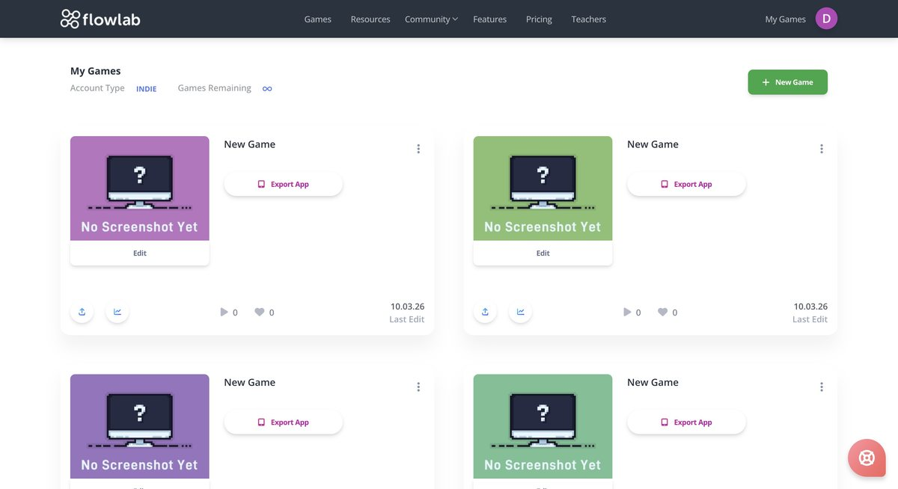
O clipe repete sozinho. Repare onde o cursor vai antes de clicar.
Foto da tela.
Abra o navegador em flowlab.io e entre com a sua conta.
No alto da página, clique em My Games. Aparecem os jogos que você já fez.
- Não lembro a senha
- Chame o professor. Não crie conta nova: os seus jogos estão na antiga.
- A lista está vazia
- Confira se entrou com a mesma conta das outras aulas.
Crie um jogo novo


O clipe repete sozinho. Repare onde o cursor vai antes de clicar.
Foto da tela.
Clique no botão verde New Game, no canto de cima à direita da lista.
Abre uma tela com os tipos de projeto.
- Não acho o New Game
- Ele é o único botão verde da página, no alto à direita.
Escolha o PROJETO VAZIO
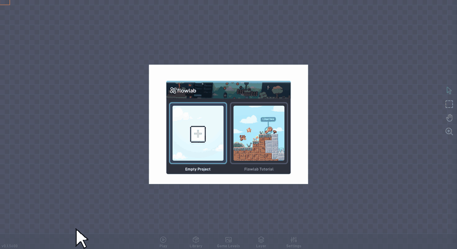

O clipe repete sozinho. Repare onde o cursor vai antes de clicar.
Foto da tela.
Na tela dos tipos, clique em Empty Project — o projeto vazio.
Abre o editor com a folha branca quadriculada.
- Escolhi outro e veio um jogo pronto
- Volte em My Games, apague esse e comece pelo Empty Project.
Pinte o céu

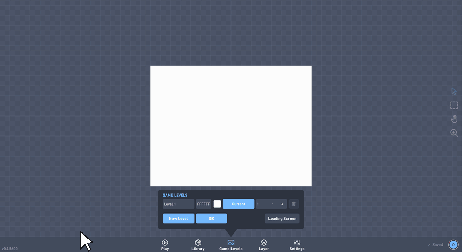
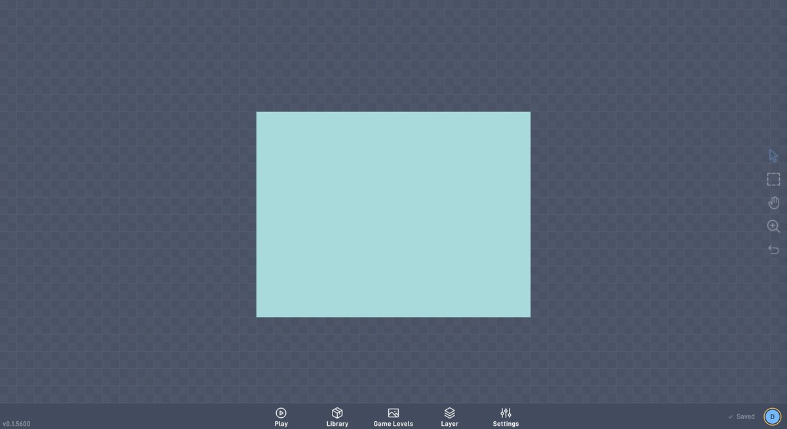
O clipe repete sozinho. Repare onde o cursor vai antes de clicar.
Foto da tela.
Clique em Game Levels, na fileira de baixo. Ao lado do nome Level 1 há um campo escrito FFFFFF.
Clique nele, apague, escreva A8DADC e aperte Enter.
- Digitei e não mudou
- Aperte Enter depois de escrever. Sem ele o campo não vale.
Crie o jogador
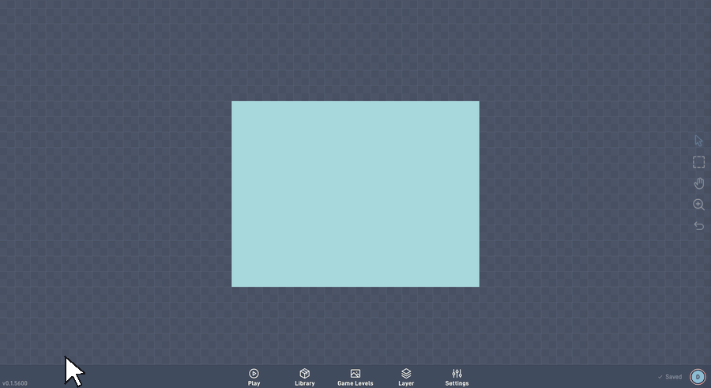
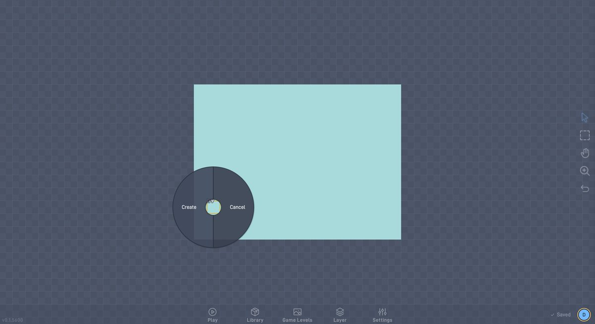
O clipe repete sozinho. Repare onde o cursor vai antes de clicar.
Foto da tela.
Clique uma vez dentro da folha azul, na parte de baixo, bem à esquerda — ele vai precisar de espaço para empurrar as caixas até lá longe.
Abre a roda com Create e Cancel.
- Cliquei fora da folha
- Clique dentro do retângulo azul. Fora dele não nasce objeto.
Escolha CREATE
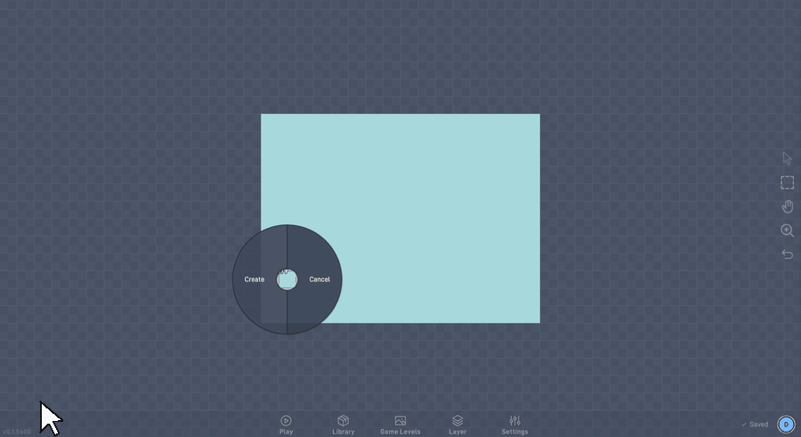
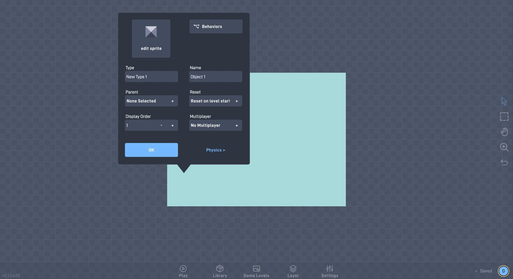
O clipe repete sozinho. Repare onde o cursor vai antes de clicar.
Foto da tela.
Na roda que abriu, clique em Create, na metade de cima.
Abre o painel do objeto novo.
- Cliquei em Cancel sem querer
- Clique na casa de novo e escolha Create.
Escreva JOGADOR nos dois campos
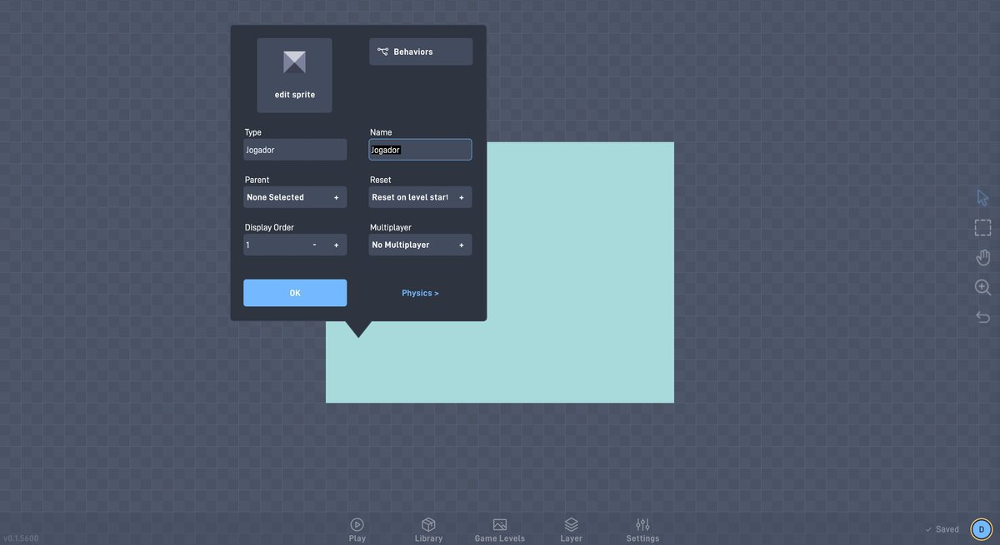
Foto da tela.
No campo Name, escreva Jogador e aperte Tab. No campo Type, escreva Jogador também.
Hoje o Type vai trabalhar muito: a caixa vai perguntar eu encostei num Alvo?, o alvo vai perguntar encostou uma Caixa em mim? e o recado vai procurar a Porta. Três perguntas, três tipos.
- Escrevi só no Name
- Clique no campo Type e escreva lá também.
- Escrevi com acento
- Escreva sem acento. Acento em nome de peça dá problema mais para a frente.
Escolha o desenho do jogador
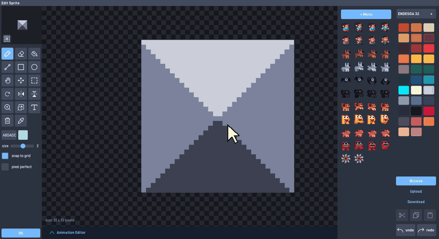
O clipe repete sozinho. Repare onde o cursor vai antes de clicar.
Foto da tela.
Clique no quadrado edit sprite, à esquerda do painel.
1. Clique em Browse, embaixo da paleta de cores.
2. Se aparecer o botão azul < Menu no alto, clique nele.
3. Clique em Flowlab Sprites e depois na faixa azul Characters.
4. Clique no primeiro boneco, no canto de cima à esquerda.
Feche no OK, no canto de baixo à esquerda.
- Não acho o Browse
- Ele fica embaixo da paleta de cores, na coluna da direita.
- Cliquei e não mudou nada
- Clique bem em cima da figura, não no espaço entre elas.
A física do jogador
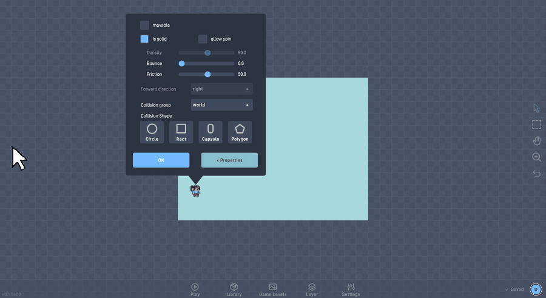
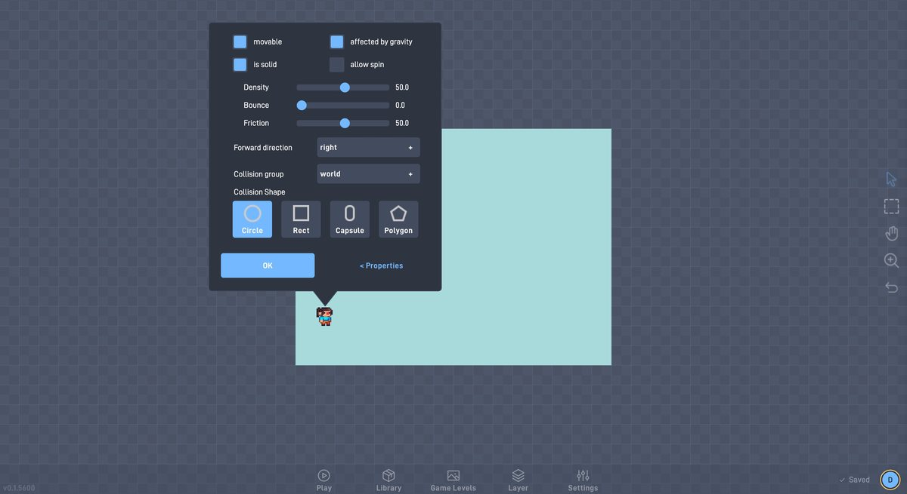
O clipe repete sozinho. Repare onde o cursor vai antes de clicar.
Foto da tela.
No painel, clique em Physics >, no canto de baixo à direita.
1. movable — marque.
2. affected by gravity — deixe marcada.
Feche no OK azul.
- Não acho Physics
- É um texto azul claro, pequeno, no canto de baixo à direita do painel.
Faça o boneco correr e pular
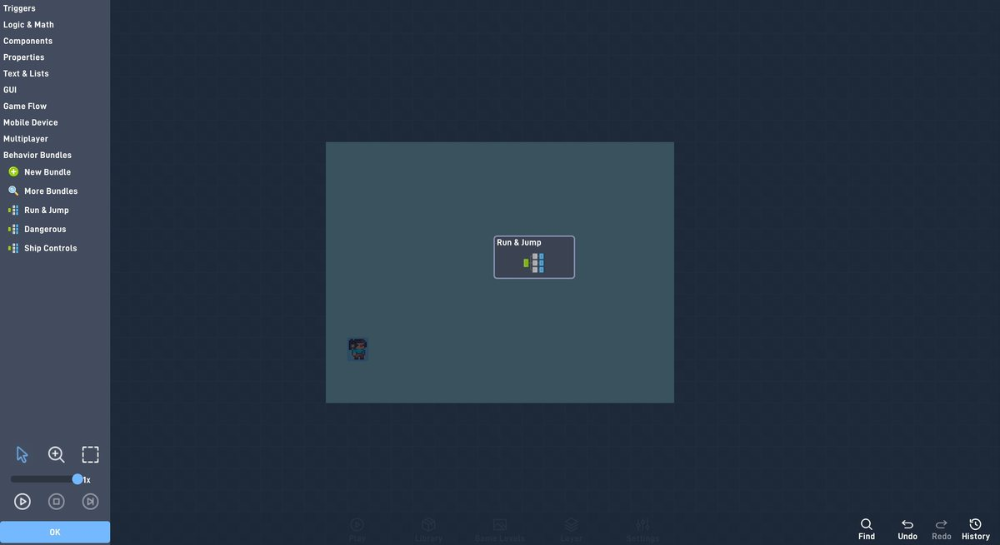
Foto da tela.
Com o jogador aberto, clique em Behaviors.
Na coluna da esquerda, lá embaixo, clique em Behavior Bundles e arraste o Run & Jump para o meio da mesa.
É o mesmo pacote das aulas 2 e 6. Espere uns segundos antes de fechar.
- Arrastei e não caiu nada
- Solte no meio da mesa, longe da beirada.
- Não acho Behavior Bundles
- É o último item da coluna da esquerda. Role até o fim.
Faça o chão
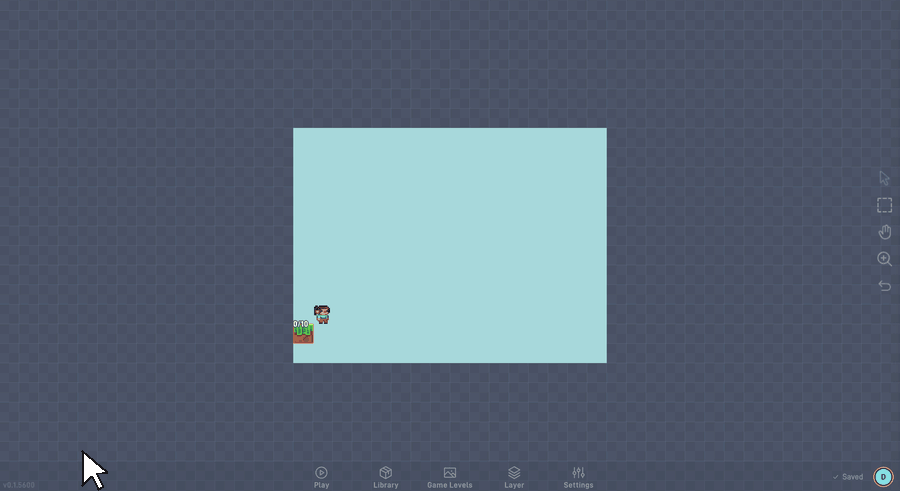
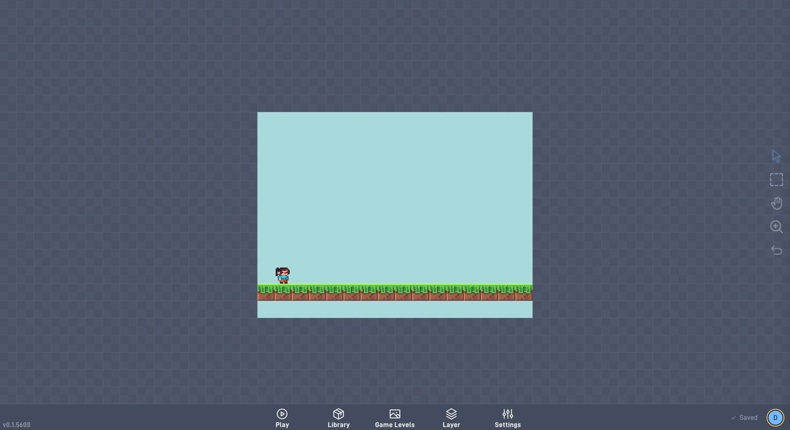
O clipe repete sozinho. Repare onde o cursor vai antes de clicar.
Foto da tela.
Feche as duas telas. Clique na casa do canto de baixo à esquerda e escolha Create. Em Name e em Type escreva Chao. Em edit sprite, pelo Browse, pegue o primeiro bloco de Flowlab Sprites › Blocks. Feche no OK.
Agora repita pela fileira toda: clique nela, escolha Clone, clique nas casas à direita até a ponta, e termine em done cloning.
- Ficou um buraco
- Clique na casa vazia, escolha Clone e preencha.
- A caixa cai no buraco
- Exatamente por isso o chão não pode ter falha.
Crie a CAIXA que se empurra
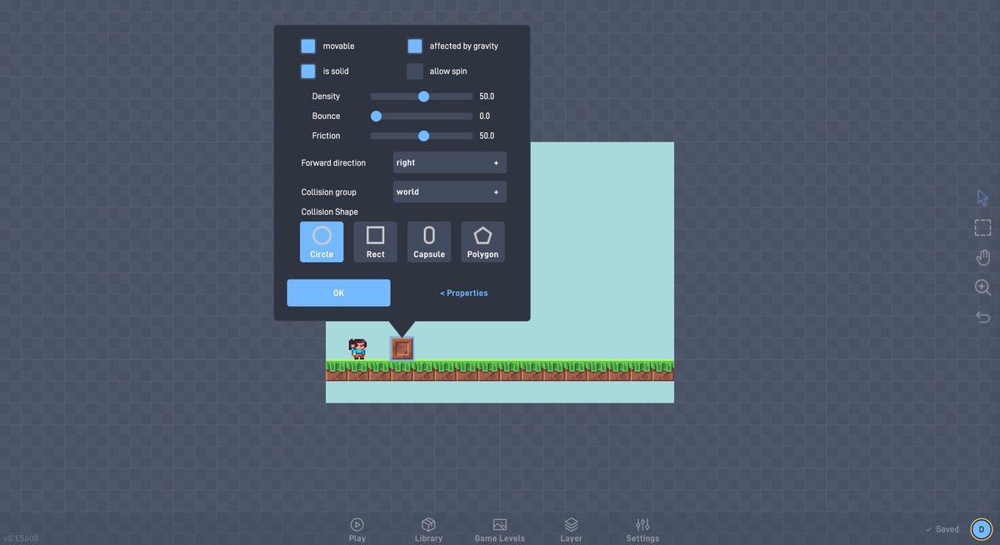
Foto da tela.
Clique numa casa do chão à direita do boneco, com um espaço entre os dois, e escolha Create. Escreva Caixa nos dois campos.
Em edit sprite, pelo Browse, em Flowlab Sprites › Blocks, pegue uma caixa de madeira.
Agora a parte que faz a mágica: em Physics >, marque movable e deixe affected by gravity marcada.
Só isso. Não existe bloco de empurrar nesta aula: a caixa anda porque é pesada e solta, e o boneco esbarra nela. O computador cuida do resto.
- A caixa não sai do lugar
- Faltou movable. Abra a física dela e marque.
- A caixa sai voando
- Está leve demais. Abra a física e aumente o Density, que é o peso.
Faça TRÊS caixas
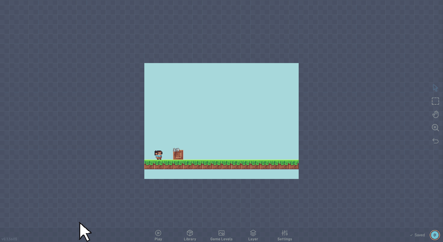
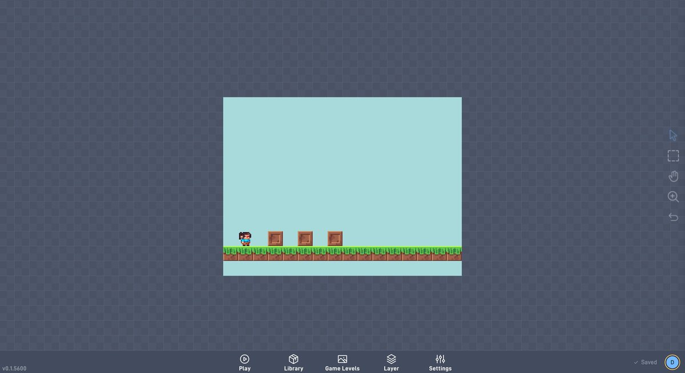
O clipe repete sozinho. Repare onde o cursor vai antes de clicar.
Foto da tela.
Clique na caixa, escolha Clone e clique em mais duas casas do chão, espalhadas à direita dela. Termine em done cloning.
Ficaram três. Elas são cópias do mesmo molde — então tudo o que você ensinar à primeira, as três vão saber.
- Ficaram grudadas
- Tudo bem, mas é mais difícil de empurrar. Clique numa, Delete, e clone num lugar mais afastado.
Marque o ALVO
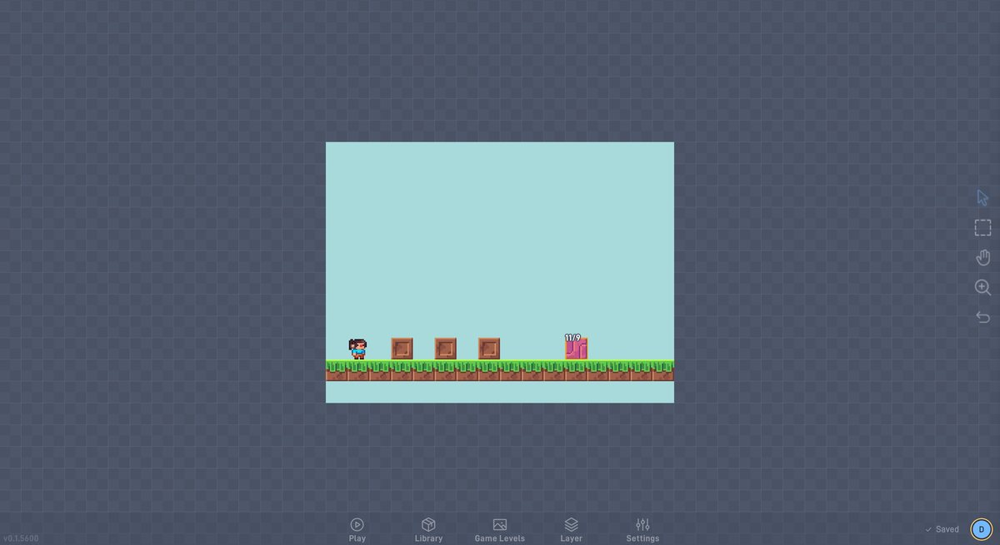
Foto da tela.
Clique numa casa do chão bem à direita, longe das caixas, e escolha Create. Escreva Alvo nos dois campos, e escolha um desenho que marque o lugar — um tijolo de cor diferente serve bem.
Não mexa na física dele. O alvo fica parado e sólido, como o chão: a caixa vai bater nele, e bater já é o bastante.
- Pus muito perto das caixas
- Clique nele, escolha Delete e ponha mais longe. O jogo fica melhor com empurrão de verdade.
A caixa avisa o alvo e some
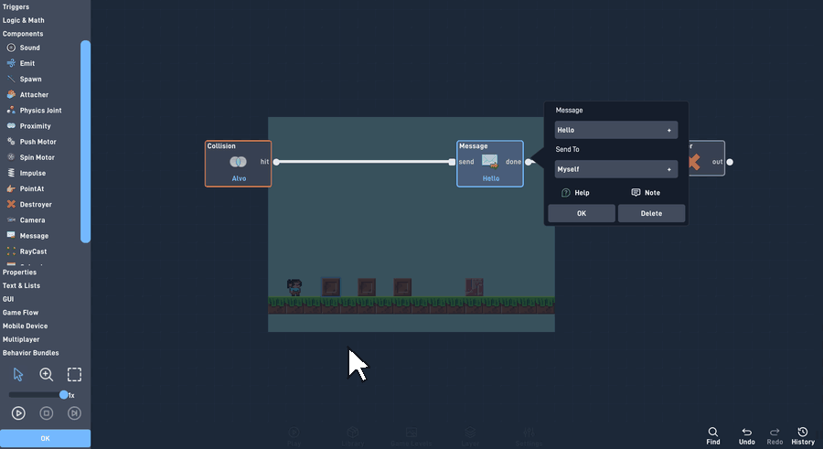
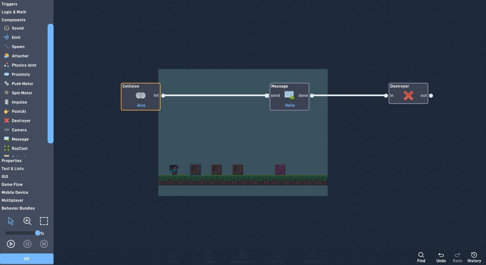
O clipe repete sozinho. Repare onde o cursor vai antes de clicar.
Foto da tela.
Feche as duas telas, clique numa caixa e depois em Behaviors.
É a mesma corrente da chave da Aula 6, com outro destinatário:
1. Em Triggers, arraste um Collision.
2. Em Components, arraste um Message.
3. Em Components, arraste um Destroyer.
Dois fios: de hit até send, e de done até in.
Clique devagar no Collision e, na lista Any Type, escolha Alvo. Sem isso a caixa se destruiria ao encostar no chão, e as três sumiriam no primeiro instante do jogo.
E diga para quem vai o recado: clique devagar no Message, no Send To escolha Choose objects e, em Select Type, escolha Alvo.
Lendo em voz alta: quando eu bater no Alvo, avise o Alvo; quando o aviso sair, eu sumo.
- As caixas somem sozinhas
- O Collision ficou em Any Type e está contando o chão. Escolha Alvo.
- A caixa some mas o número não sobe
- O recado está indo para Myself. Volte no Send To e escolha Choose objects.
- Só uma caixa some
- Você pôs os blocos num clone. Ponha na caixa que você criou primeiro — o molde.
O alvo CONTA as caixas
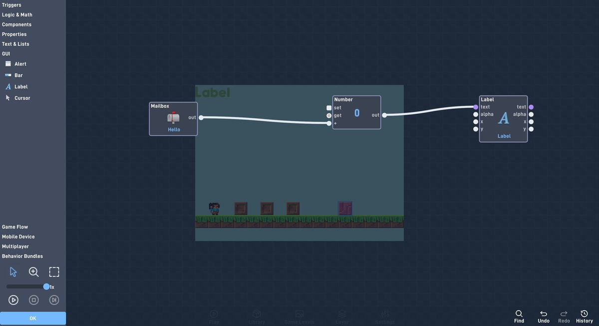
Foto da tela.
Feche as duas telas, clique no alvo e depois em Behaviors.
É o mesmo trio da Aula 5, o do placar — só que agora quem dispara não é o relógio, é o recado que a caixa mandou:
1. Em Triggers, o Mailbox — a caixa de correio da Aula 6.
2. Em Logic & Math, o Number. Deixe em 0.
3. Em GUI, o Label.
Os fios: de out do Mailbox até a bolinha + do Number — a terceira, a de baixo — e de out do Number até text do Label.
Repare no que você montou: a caixa avisa, o alvo conta. Nenhum dos dois sabe o que o outro faz por dentro — e é exatamente assim que programa grande se organiza.
- O número não sobe
- O fio foi para set ou get. Ele tem de chegar na bolinha +.
- O número só sobe se eu encostar no alvo
- O Mailbox espera recado, não batida. Confira o passo 15: o Send To da caixa tem de apontar para Alvo.
- O placar está pequeno
- Clique devagar no Label e puxe a régua size para a direita.
Jogue e entregue uma caixa
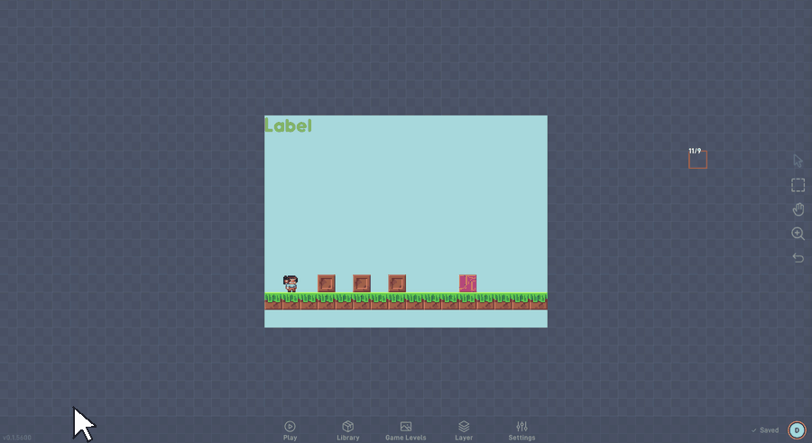
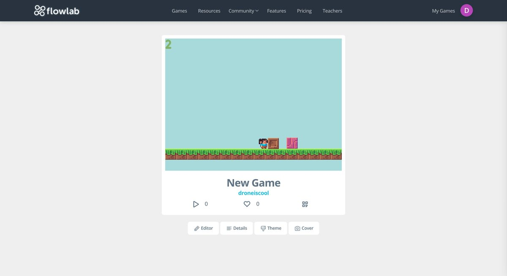
O clipe repete sozinho. Repare onde o cursor vai antes de clicar.
Foto da tela.
Feche as duas telas e clique em Play.
Clique uma vez dentro do jogo e ande para a direita, empurrando a primeira caixa. Quando ela chega no alvo, ela some e o número no canto sobe.
Repare numa coisa: a primeira caixa vai empurrando a segunda, que empurra a terceira — elas andam em trem. Por isso o número às vezes pula de dois em dois, e está certo: ele conta caixa que chegou, não empurrão que você deu.
E você não escreveu um nem dois em lugar nenhum: o bloco + faz a conta.
- A caixa não anda
- Confira o movable dela, no passo 12.
- A caixa some antes de chegar
- O Collision dela está em Any Type. Volte ao passo 15.
- O número não aparece
- Confira o fio do Number até o text do Label.
- Quero entregar uma de cada vez
- Volte ao editor e afaste mais as caixas umas das outras. Assim elas não se empurram em trem.
Levante a PORTA na saída
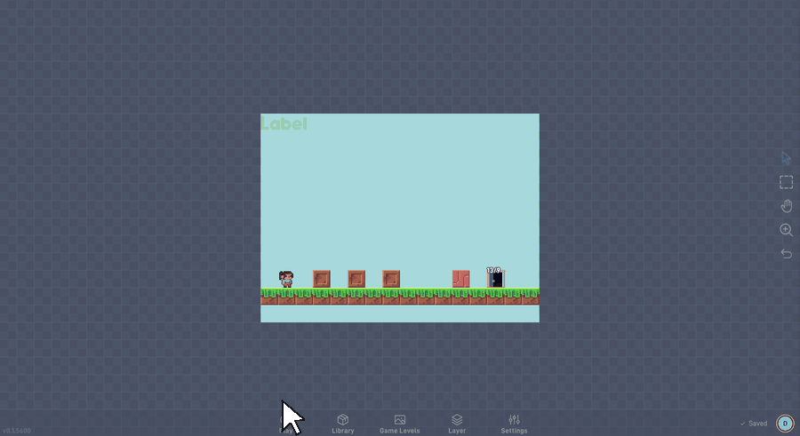
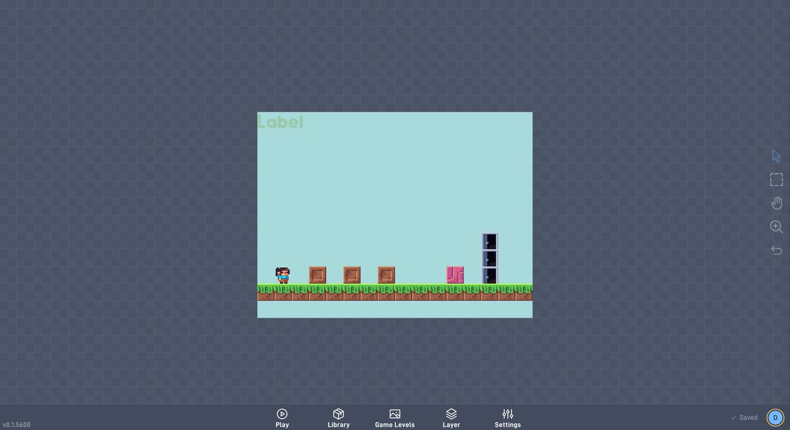
O clipe repete sozinho. Repare onde o cursor vai antes de clicar.
Foto da tela.
Volte ao editor. Clique numa casa do chão depois do alvo, perto da ponta direita, e escolha Create. Escreva Porta nos dois campos, e em edit sprite pegue o vão escuro com batente em Flowlab Sprites › Blocks — o mesmo da Aula 6.
Clique nela, escolha Clone e clique nas duas casas acima. Termine em done cloning.
Agora a saída está fechada, e nenhum dos blocos que você montou até aqui abre essa porta.
- Consigo pular por cima
- Faltou um pedaço. Clone mais uma casa para cima.
O número passa a DECIDIR
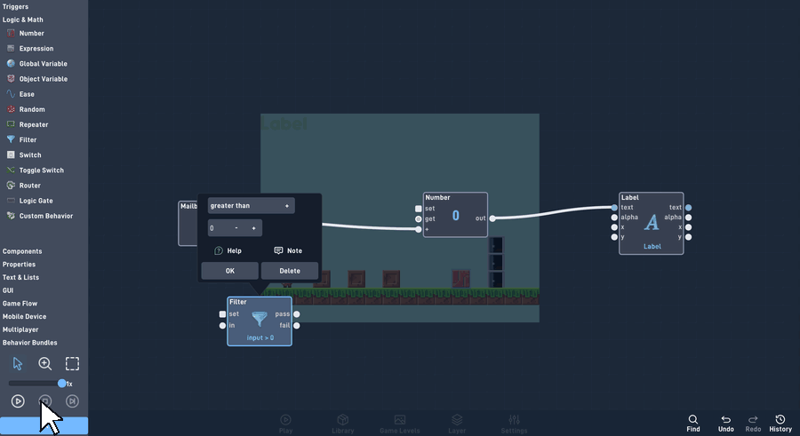
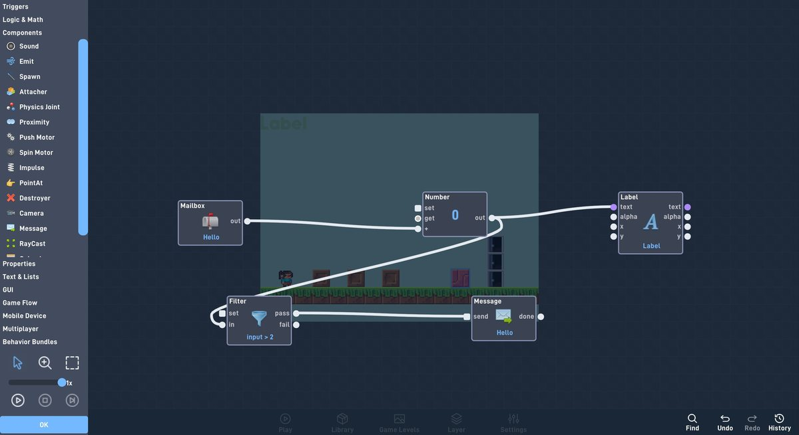
O clipe repete sozinho. Repare onde o cursor vai antes de clicar.
Foto da tela.
Clique no alvo e depois em Behaviors. Os três blocos do placar já estão lá; vamos pendurar mais dois embaixo.
1. Em Logic & Math, arraste o Filter — o bloco do funil. Embaixo dele está escrito input > 0: é a pergunta que ele faz.
2. Em Components, arraste um Message.
Mude a pergunta: clique devagar no Filter e, no campo do número, clique duas vezes no +. Agora o bloco mostra input > 2 — e maior que 2 é o mesmo que três ou mais.
Os fios: de out do Number até in do Filter, e de pass do Filter até send do Message.
E para quem vai o recado: clique devagar no Message, no Send To escolha Choose objects e, em Select Type, escolha Porta.
Lendo em voz alta: toda vez que o número mudar, pergunte se ele já passou de 2; se passou, avise a Porta.
- O bloco continua dizendo input > 0
- Clique devagar nele para abrir os ajustes, e clique no + do número duas vezes.
- Liguei no fail sem querer
- O fail é a bolinha de baixo e dispara quando a conta não bate. Você quer o pass, a de cima.
- A porta abre na primeira caixa
- A condição ficou em input > 0. Qualquer número acima de zero passa.
A porta escuta
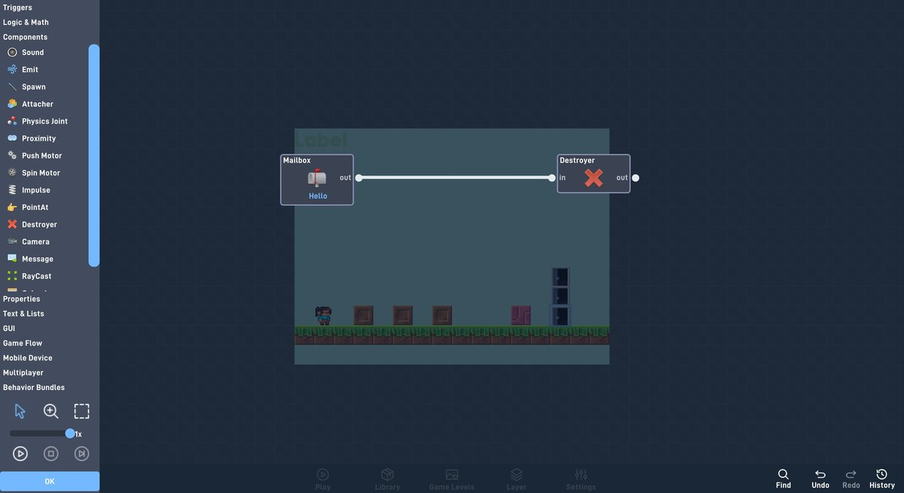
Foto da tela.
Feche as duas telas, clique na porta e depois em Behaviors.
1. Em Triggers, arraste o Mailbox.
2. Em Components, arraste o Destroyer.
3. Ligue out em in.
É igualzinho à porta da Aula 6 — e, como lá, você faz uma vez só: os três pedaços são cópias do molde e os três escutam.
- Não acho o Mailbox
- Ele está em Triggers, junto com o Collision.
- Só um pedaço some
- Os blocos foram parar num clone. Ponha no molde — a peça de baixo, a que você criou.
Jogue e mande o link
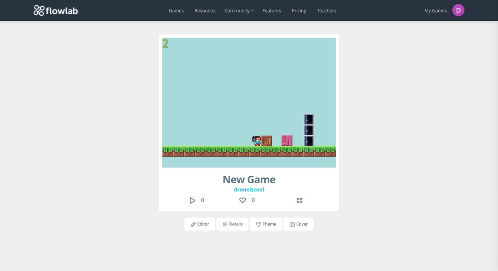
Foto da tela.
Feche as duas telas e clique em Play.
Empurre as três caixas até o alvo. Na primeira o número vira 1, na segunda 2 — e nada acontece. Na terceira o número vira 3, o funil deixa o recado passar, e a porta cai sozinha.
Para mandar para alguém: copie o endereço da barra do navegador e mande. Quem abrir vai ter de descobrir sozinho que são três.
- A porta abre cedo demais
- A condição do funil está baixa. Volte ao passo 19 e deixe input > 2.
- A porta nunca abre
- Confira se as três caixas realmente somem no alvo, e se o fio sai do pass.
- Quero mais difícil
- Ponha mais caixas e mude a condição para input > 4. Ou espalhe as caixas mais longe umas das outras.